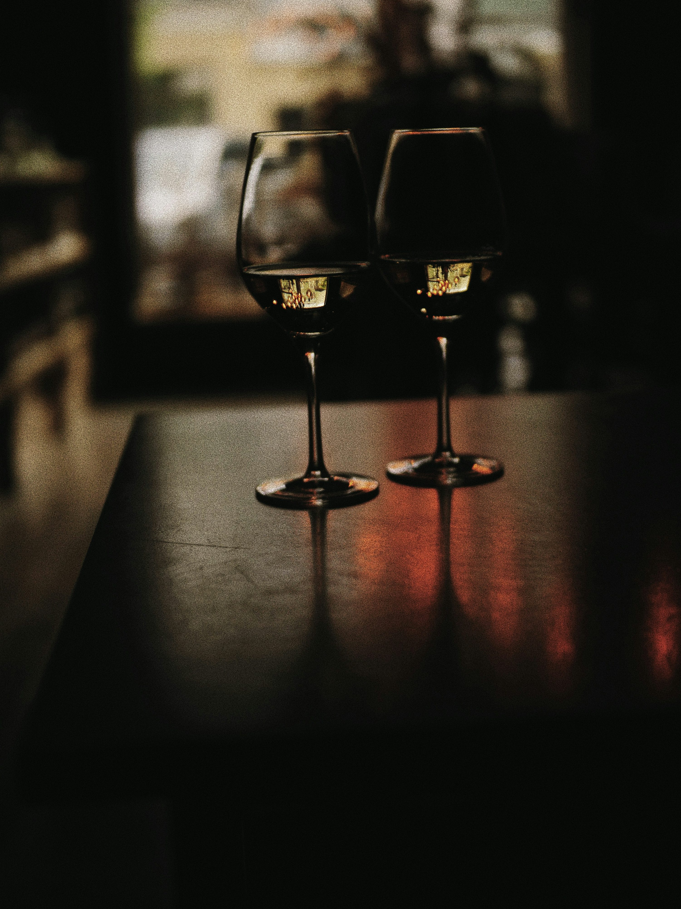
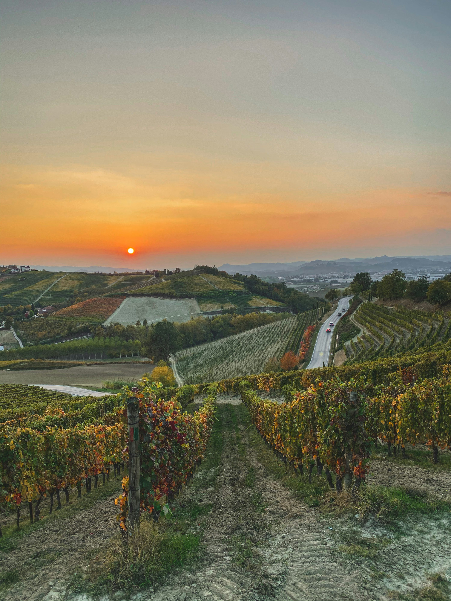

Simone Pietro Di Potenza
Recensione Google“Bella scoperta! Gentilezza e cordialità.”
Estratto · Consultato il 31 agosto 2026
VIA MADONNA, 12DRUENTO · TORINO
La Cave d’AntoineVINO & CAFFÈCI VEDIAMO DALLE 17:30MERCOLEDÌ — SABATO
UN POSTO A DRUENTO, PER STARE INSIEME.
Vino, taglieri e due chiacchiere.
Da Antoine, senza tante cerimonie.
 Ci vediamo
Ci vediamo
AL BANCONE
Le proposte del giorno? Chiedi ad Antoine.
Dai un’occhiata alla Cave“Bella scoperta! Gentilezza e cordialità.”
Estratto · Consultato il 31 agosto 2026

Langhe · Immagine d’atmosfera di Beatrice Zinetti